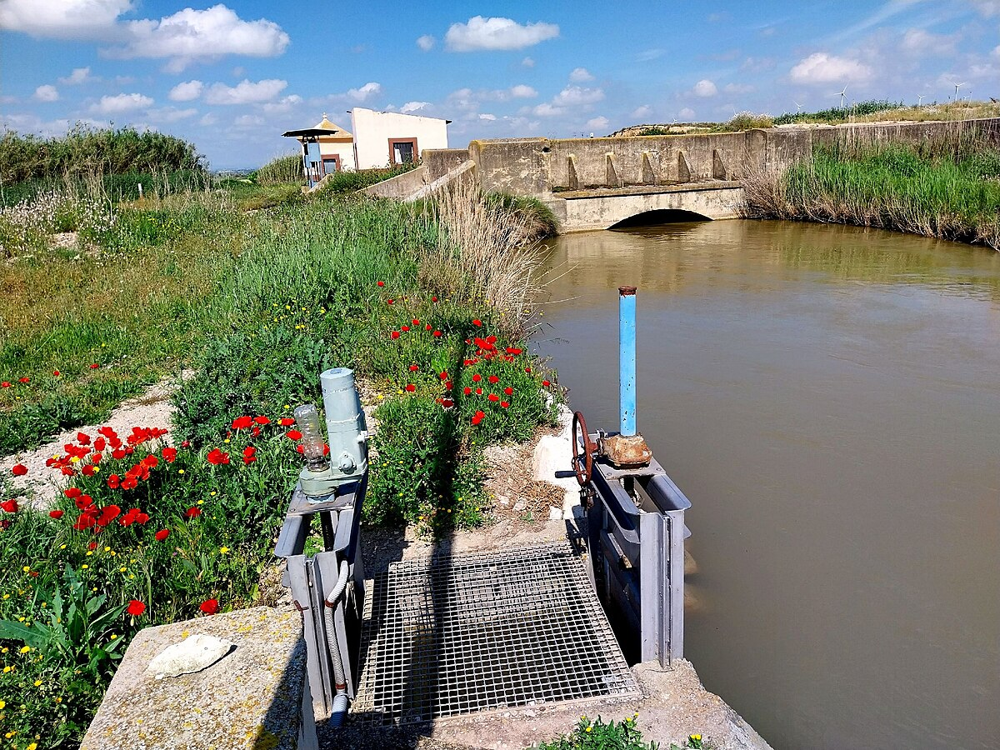
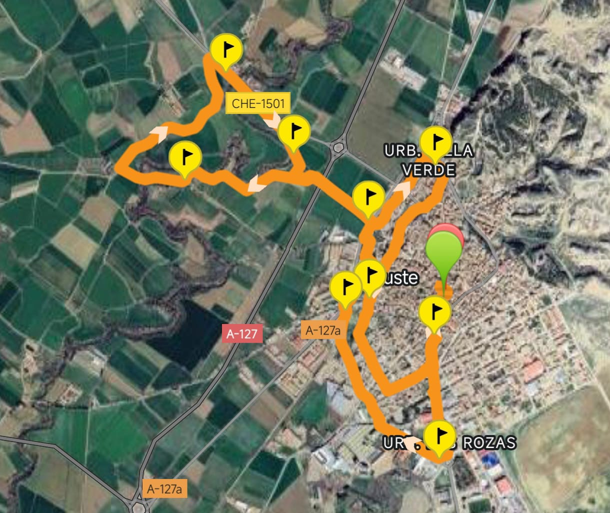
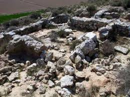
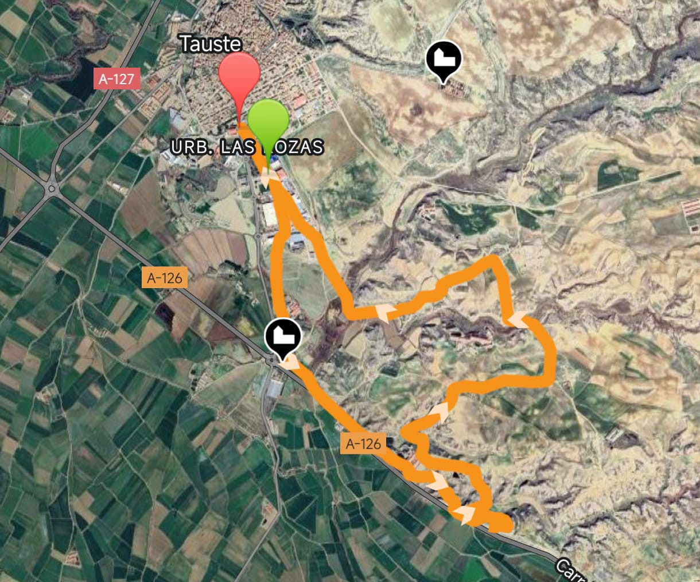
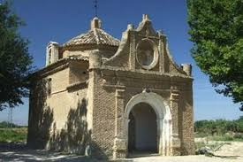
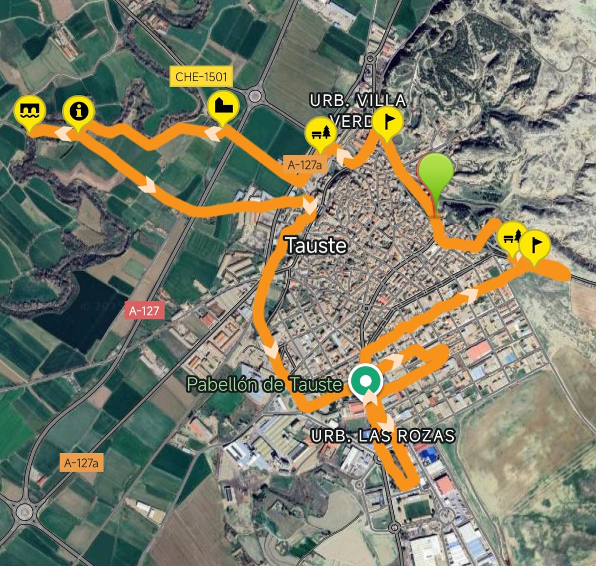

Routes around Tauste and surroundings
Discover paths, natural walks and accessible routes perfect for enjoying the municipality's environment.
Route 1 · Walk along the Canaleta del Indio


Distance: 8.58 km · Difficulty: Easy
A quiet walk along the river that offers a flat and accessible path for families, ideal for photography and enjoying the natural landscape.
Route 2 · Val de Taus Archaeological Site


Distance: 11.40 km · Difficulty: Moderate
Route with some slope that accesses the archaeological site, allowing you to enjoy the history and agricultural landscape of the area.
Route 3 · Around the Town


Distance: 8.64 km · Difficulty: Easy
Route that allows you to get to know the surroundings of Tauste, combining paths through the town with walks along the water channel, ideal for a relaxed excursion.